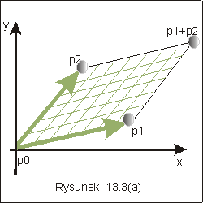
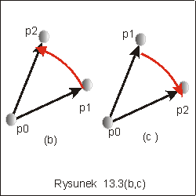
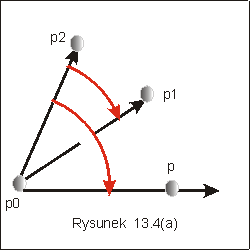
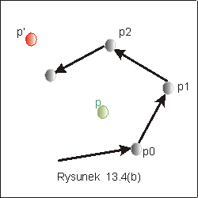

| « poprzedni punkt | nastêpny punkt » |
W tym punkcie wyk³adu zajmiemy siê
badaniem prostych zale¿no¶ci miêdzy obiektami geometrycznymi jakimi s±
punkt, prosta i wektor. Dobór problemów nie jest
przypadkowy: poruszymy te problemy elementarne, które pojawi± siê
w nastêpnych punktach, gdzie bêdzie mowa o jednym z centralnym
problemów geometrii obliczeniowej, jakim jest problem otoczki wypuk³ej.
Okazuje siê, ¿e wiêkszo¶æ z nich mo¿na rozwi±zaæ za pomoc± operacji
produktu wektorowego i/lub wykorzystuj±c jego w³a¶ciwo¶ci. St±d tytu³
tego punktu.
Niech p1 i p2
bêd± dwoma punktami na
p³aszczy¼nie, p1 = (p1.x, p1.y), p2
= (p2.x, p2.y). Iloczynem wektorowym wektorów
zaczepionych w pocz±tku uk³adu wspó³rzêdnych i o koñcach odpowiednio w
punktach p1 i p2 jest wektor x = p1
´ p2 prostopad³y
do obu wektorów, taki ¿e trójka uporz±dkowana p1, p2 , x ma orientacjê dodatni±
oraz d³ugo¶æ wektora x, |x| = |p1| *|p2| * sin j gdzie
j jest
k±tem miêdzy tymi wektorami.
Dla celów tego wyk³adu, najwa¿niejsza okazuje siê interpretacja warto¶ci | p1 x p2|, jako pola równoleg³oboku, utworzonego przez punkty (0,0), p1, p2, i p1+ p2, opatrzonego znakiem, por. rysunek 13. 3(a), oraz fakt, ¿e warto¶æ tego pola mo¿na wyliczyæ jako warto¶æ wyznacznika utworzonego przez wspó³rzêdne wektorów p1 i p2.
|  |
 |
Problem I Jak porównaæ dwa k±ty nie licz±c ich warto¶ci? Niech sytuacja
bêdzie taka jak przedstawiono na rysunku 13.4a. Który z
k±tów (p1,p0,p),
czy (p2,p0,p) jest wiêkszy? Wystarczy
stwierdziæ jakie jest wzajemne po³o¿enie wektorów p0p1 i p0p2. Liczymy w tym celu
wyznacznik det (p1- p0, p2 - p00).
Je¿eli jego znak jest dodatni,
to k±t(p2 p0 p) jest wiêkszy ni¿
k±t( p1p0p).
|  |
 |
Problem II Niech bêd± dane punkty tworz±ce wielok±t wypuk³y, por. rysunek 13.3c. Jak sprawdziæ, czy dany punkt jest, czy nie jest we wnêtrzu tego wielok±ta? Wystarczy w tym celu sprawdziæ, czy dany punkt je¿y na lewo od prostych bêd±cych przed³u¿eniem boków wielok±ta id±c wzd³u¿ krawêdzi w kierunku od p0 do p3. Punkt p na rysunku 13.4(b) spe³nia ten warunek, a punkt p' nie spe³nia. Wprawdzie le¿y na lewo od wektorów p0p1, p1p2, p2p3, ale jest na prawo od prostej wyznaczonej przez krawêd¼ p2p3.
Zauwa¿my, ¿e sprawdzenie, po której stronie prostej le¿y dany punkt ma koszt
sta³y, ale w przypadku problemu sprawdzenia czy dany punkt le¿y wewn±trz
wielok±ta wypuk³ego, wymaga wykonania liczby kroków równej liczbie krawêdzi
wielok±ta.
Pytanie 2: Rozwa¿my trzy punkty na p³aszczy¼nie (0,1), (1,0),
(3,3). Czy punkt (2,2.5) le¿y wewn±trz, czy na zewn±trz trójk±ta utworzonego przez te
punkty?
| « poprzedni punkt | nastêpny punkt » |